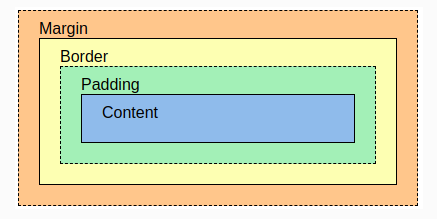
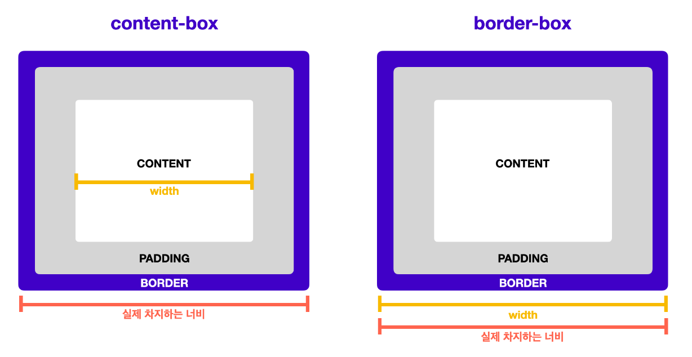

모든 컨텐츠는 각자의 영역을 가지며 일반적으로 하나의 컨텐츠로 묶이는 요소들이 하나의 박스가 된다.
박스는 항상 직사각형이고 너비와 높이를 가지며 CSS를 이용해 속성과 값으로 그 크키를 설정한다.
박스의 종류는 줄바꿈이 되는 박스와 줄바꿈이 없이 옆으로 붙는 박스로 구분할 수 있다.
줄바꿈이 되는 박스는 block 박스 줄바꿈이 일어나지 않고 크기 지정을 할 수 없는 박스는 inline 박스라고 부른다.
그리고 이 두 가지 박스 종류의 특징이 섞인 줄바꿈이 일어나지 않는 동시에 block 박스의 특징을 가지는 inline-block 박스도 있다.
block 박스 요소의 목록은 MDN block 엘리먼트 목록을 통해 inline 박스 요소의 목록은 MDN inline 엘리먼트 목록을 통해 확인할 수 있다.
| block | inline | inline-block | |
| 줄 바꿈 | 일어남 | 일어나지 않음 | 일어나지 않음 |
| 기본 너비 | 100% | 글자가 차지하는 만큼 | 글자가 차지하는 만큼 |
| width, height | 사용 가능 | 사용 불가능 | 사용 가능 |

border(테두리)를 기준으로 padding(안쪽 여백)과 margin(바깥 여백)이 있다.
border는 심미적인 용도 외에도 각 영역이 차지하는 크기를 파악하기 위해 레이아웃을 만들면서 그 크기를 시각적으로 확인할 수 있도록 만든다.
border를 기준으로 바깥 여백의 크기를 설정한다.
border를 기준으로 안쪽 여백의 크기를 설정한다.
요소의 컨텐츠가 너무 커서 요소의 박스 서식에 맞출 수 없을 때의 처리방법을 설정하는 속성으로 속성값은 hidden, visible, auto, scroll 등이 있다.
{ overflow: auto; }
박스를 넘어가는 컨텐츠를 보여주지 않는다.
박스를 넘어가는 컨텐츠를 보여준다.
컨텐츠가 박스를 넘어가는 경우 스크롤을 생성하여 보여준다.
컨텐츠가 박스를 넘어가지 않던 넘어가던 스크롤을 항상 생성한다.
박스의 너비와 높이를 계산하는 방법을 지정하는 속성으로 속성값은 content-box, border-box가 있다.
box-sizing을 일부 요소에만 적용하는 경우 혼란을 가중시킬 수 있으므로 일반적으로 HTML 문서 전체에 적용한다.
* {
box-sizing: border-box;
}

박스의 크기를 측정하는 기본값으로 width와 height 속성이 컨텐츠 영역만 포함하고 여백과 테두리 두께는 포함하지 않는다.
안쪽 여백(padding)과 테두리 두께를 포함한 박스 크기를 측정하는 속성값이다.